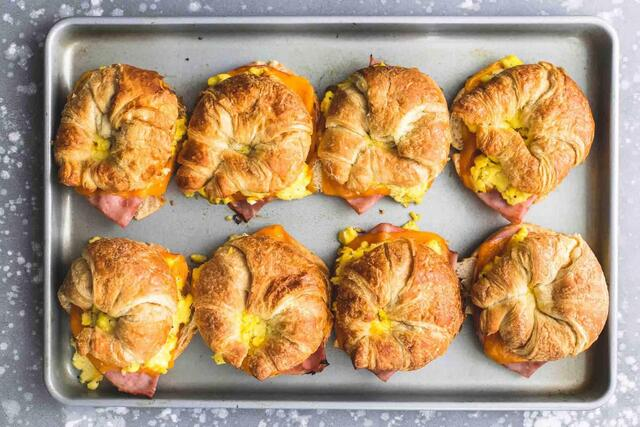

Baked Croissant Breakfast Sandwiches

Description
Baked Croissant Breakfast Sandwiches made with fluffy and cheesy scrambled eggs, sliced ham, sharp cheddar cheese, on buttery croissants. Easy to make-ahead and freeze for grab-n-go meals too!
Ingredients
- 8 croissants - sliced in half
- 8 slices sharp cheddar cheese
- 8 slices deli ham
- 6 large eggs
- ⅓ cup Whole Milk
- salt and pepper to taste
- ½ cup Shredded Mozzarella Cheese
Steps
- Preheat oven to 350 degrees. Arrange bottom half of croissants in Ia single layer on a large rimmed baking sheet. Place one slice of ham and one slice of cheese on each croissant.
- In a medium bowl whisk together eggs, milk, salt, and pepper. Pour egg mixture into greased pan or skillet over medium-high heat. Cook for 2-3 minutes. Use a wooden spoon or a rubber spatula to gently stir the eggs, being sure to scrape the bottom of the pan as you are stirring so eggs cook evenly.
- Once eggs begin to look mostly cooked, stir in shredded mozzarella cheese until melted and combined, then finish cooking eggs to your liking. Remove from heat.
- Top ham and cheese with a large scoop of scrambled eggs. Top with second half of the croissant buns. Bake in preheated oven for 10 minutes or until cheddar cheese is melty and croissants are toasted.
- Serve immediately OR allow to cool completely before wrapping individually in plastic wrap and freezing. To reheat, unwrap, place on a paper towel and microwave for 1 minute or until heated through.
Notes
Freezer friendly:wrap tightly individually with plastic wrap, store in ziploc bag in the freezer up to one month. Reheat individually and serve.
Nutrition
Calories: 439 kcal, Carbohydrates: 27 g, Protein: 21 g, Fat: 27 g, Saturated Fat: 14 g, Trans Fat: 1 g, Cholesterol: 202 mg, Sodium: 799 mg, Potassium: 228 mg, Fiber: 1 g, Sugar: 7 g, Vitamin A: 823 IU, Vitamin C: 1 mg, Calcium: 230 mg, Iron: 2 mg